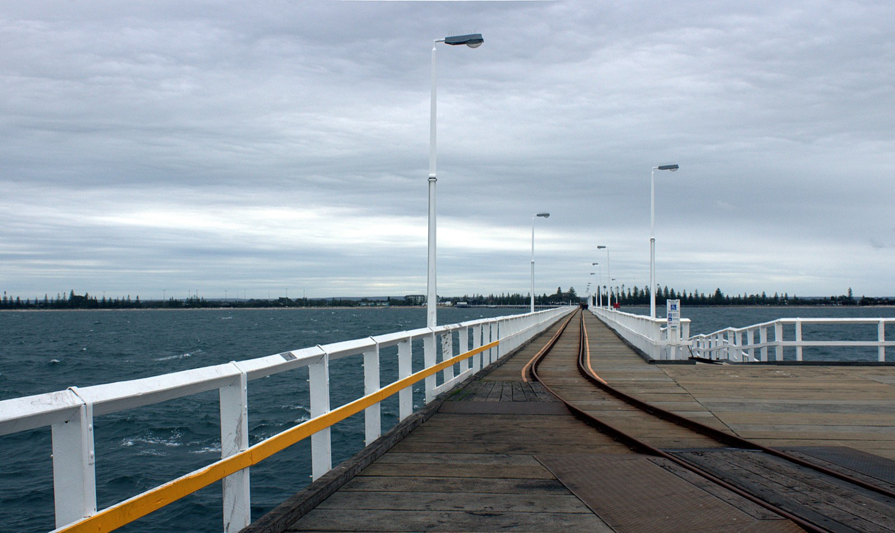

Busselton is the commercial hub of the region — home to the iconic Busselton Jetty and the busiest town in the South West corridor.

Busselton Jetty — the longest wooden jetty in the Southern Hemisphere, stretching out into Geographe Bay.